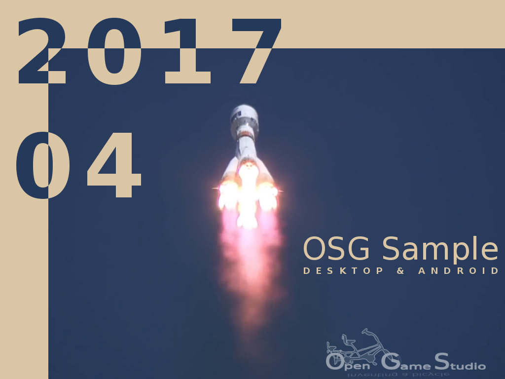

2017-05-12 00:00

This article describes creation of the tutorials for building sample OpenSceneGraph application under Linux, macOS, Windows, and Android in April 2017.
Previous tutorials described how to install OpenSceneGraph under Linux, macOS, Windows and render a model using the standard osgviewer tool. This time we worked on a sample OpenSceneGraph application that would run under Linux, macOS, Windows, and Android.
The application is very basic and has the following features:
Creating the tutorials for Linux, macOS, Windows was so easy and straightforward, that it only took us half a month. We spent the second half of the month creating Android tutorial.
Our first successful Android build last year included hacks and non-obvious steps to make OpenSceneGraph run under Android. This time we wanted a cleaner, faster, and cheaper approach.
The approach we ended up with requires just a few files and a few changes to the original Android Studio project (with C++ support) to make sample OpenSceneGraph application run under Android.
Here's a quick rundown of the files:
Here's a quick rundown of the project changes:
OpenSceneGraph documentation suggests building OpenSceneGraph outside Android Studio with CMake. However, this approach has the following limitations:
Our approach includes building OpenSceneGraph for those target architectures that Android Studio project is built for. Also, OpenSceneGraph is already referenced, so no extra work is required: you just need to rebuild the project, and you're done.
That's it for describing the creation of the tutorials for building sample OpenSceneGraph application under Linux, macOS, Windows, and Android in April 2017.